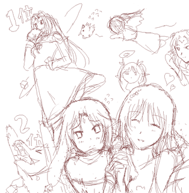

シルバーセカンド開発日誌
■
2009-02-13 (金) 言語とモノリスの速度▼
某保険屋さんの巨大アヒルちゃんを見たら今日はケーキをかぶってた、
何を言っているのか分からないと思いますがウルフです。マジです。
今日は色んなものの速度について検証してみました。
【C言語とRubyとウディタの計算速度】
前回もウディタの処理速度についてチラっと触れましたが、
実は裏で詳しく検証したデータを取っていたので、そのお話をします。
比べるのはC++とRubyとウディタの3種類の単純な変数処理についてです。
まず、C言語直打ちでX = X+Y;をコンパイルしたものを計算させた場合と
ウディタの変数操作1回分を比較すると、
さすがに1300倍くらいCの方が速いです。
また、Ruby（ツクールXP）のスクリプト内で「$X=$X+$Y」だけを行うと、
ウディタの変数操作の約13倍くらいの回数、計算することができます。
以下は100ミリ秒（0.1秒）あたりの単純な計算可能回数です。
（RGSSは時間計測関数が分からなかったので、
ハングアップエラーが出るまでの
10秒間に何回計測できるかを算出し、逆算しています）
【100ミリ秒あたりの計算回数】（CPU 2.5GHz環境下）
※どれもfor文または回数指定ループ内で実行したもの
C++ ： X=X+Y[※要コンパイル] 4500万回
Ruby(RGSS) ： スクリプト $X=$X+$Y 45万回
ウディタ ： 変数操作V[0]=V[0]+V[1] 3.5万回
ウディタの変数操作は、変数値を数値に変換する処理とか
元の値を拾ってくる処理とかオーバーフローを避ける処理だとか
バージョン違いを吸収するための処理だとかエラー時の処理だといった風に
おまけがいっぱい必要になるので、どうしてもその分だけ重くなります。
よく考えたら、配布状態のデータをプレイする際だけ
余計なエラーチェック処理を
行わないようにするといった工夫で、
処理速度が少し速くなるかもしれませんね。
余裕があったらこの辺りもチェックしてみたいところ。
にしてもこれ見ると、ウディタは元より論外として
Rubyの処理が思っていたより遅いなあという印象です。
ツクールVX・XPはこのRubyでイベントコマンド処理を作っているので、
例えば変数操作とイベントコマンド制御部分の
1回分を足して14行以上使ってしまうと、
イベントコマンド同士の比較では
ウディタより時間がかかることになります。
逆に、13行以内で作れればツクールの方が速いことになります。
XPは変数操作内だけで150行
（※といってもほとんどwhenの分岐なので詳細不明）ほど
記述されているので、数値が不要な場合は、4行だけで構成されている
「スイッチの操作」を使ってねということなんでしょう。
まあそれ以前に、複雑な自作システムは
全部Rubyで組めって話だと思いますけれど。
でもそのRubyと比べても、やっぱりC++の方が100倍速いので、
速度を追求してスマートに動くゲームを
作りたいならばC++でどうぞ、ってことになると思います。
C++なら、弾幕ゲームを作るとしても単純にウディタで作る場合の1000倍、
Rubyで作る場合の100倍の弾が出せるわけです！ まさに桁違い！
ただ私の中では、高速な「書き換え→テスト」作業が容易な
イベントコマンド型はやはり捨て切れません。
RubyやCみたいに、構文が間違ってたら動かないとか、
コンパイルを要するとか、
そういうことがないのが特にいいです。
あとはウディタの高速化が課題ですね。
ゆっくりできるようになったらもっと処理高速化の検討を行いたいです。
【女神モノリスの速度】
お次は全然実用的じゃないお話！モノリスフィアのお話です。
空想科学なんちゃら読本的な意味で女神モノリスの速度を
マジメに計算したレポートがあったので公開しておきます。
【単位 まずは1ピクセルの大きさを算出する】
モノリスの身長が165cmだと仮定した場合。
ゲーム内では彼女の身長は36ピクセルなので、
1ピクセルは約4.5cmと推定できる。
【本題：モノリスの最大速度を算出する】
モノリスグラビティがレベル10の場合、
モノリスは、真横、または真下方向に
最大速度で秒間960ピクセル移動できる。
その時の秒速は43m、つまり時速は約155 kmである。
だがゲーム内物理法則では、斜め45度で移動すると縦横ベクトル共に
秒間960ピクセルの速度が出るため、その場合の最大速度は時速約220km。
つまりモノリス様は生身で時速220kmで移動できます。
こんな速度で頭ぶつけてもノーダメージとかどう考えてもゴム人間。
以上、知らなくてもよかったモノリス様の最大速度でした。
以下は前々回の黒ウリユ記事に対するコメントです。 ▼追記を開く▼＞あれ…ウリユならデフォルトでこれくらいは
＞言ってきそうなイメージなのですが！
知らない間に人の記憶の中で黒くなってるウリユ。
＞・ウリユの見た目が少し成長したようにみえます
＞・ロリじゃない・・・だと？
＞・ていうかシル学ウリユはいくつくらいなんでしょか？
＞ 成長してるぽいので中高生くらい？
言っておきますが、ウリユはロリキャラじゃなくて妹キャラですよ！？
劇中では14歳（中3）から始まって17歳まで成長する予定なので、
使い回せるようにあんな感じにしています。
＞・黒ウリユも本編にでないでしょうか？
＞・これはいい毒舌・・・何らかの形で実装してもらえると嬉しいです
＞・黒いウリユもまた良しです！
こんなウリユいやだぁぁぁってご意見が一件だけありました。
つまりそれ以外は全部こんな感じ。皆さんＭのかたが多いんでしょうか。
＞うちの業界ではご褒美でござる＞黒ウリユ
どこの業界でござるか。
＞ところで今回のデフォ名はゴンベエとナナシじゃないんでしょーか？
ゴンベエとナナシの他にアランスミシやジェーンドゥなどをご用意！
ということは別に考えてませんが
ゴンベエとナナシでいいような気がします。
サラさんに名前付けてもらおうとしたら「ゴキブリ」とか「うすのろ」とか
付けられたりするのもイヤじゃないですか！？
＞シル学の登場キャラ募集してますけど、名前のある
＞キャラって大体登場確定してたりするんでしょうか？
どっちかというと何もないところから増やしている感じなので
最後までうっかり忘れられているキャラが続発する予感です。
＞リクレールさんをお風呂に入れてもあまり大騒ぎになってない・・・
＞つまりリクレールさんは男の娘だったんだよ！！
「な、なんだってー！」■
2008-06-16 (月) モノリスフィアキャラ人気▼
人気投票の順位がそろそろ特定できそうな感じになってきました。

ということでアンケート結果を反映した感じのイラストラフ画。
でも今はゲーム制作が楽しいので絵が完成するかどうかは不明ッ！！
で、人気投票ですが、
1位モノリス、2位ムーン、以下やや混戦状態です。
今後の動向で順位が変わるかもしれません。
とりあえず、アクエリアさんが思った以上に人気でした。
セリフもあんまり無いと思ったのに！
やっぱりセクシー効果なんでしょうか。
あ、それと草子さんが予想以上に下位でした。
何となくそんな予感はしていました、
自分もあんまり好きになれません。
モノリスフィアは、
そろそろVectorさんでレビューされるっぽいので
遊ぶ人がちょっと増えるかと思います。
とりあえずピクニックモードが楽なので、
苦手そうな方はそれで頑張ってみてください！
にしても、モノリスフィアは最初のプロトタイプの頃から考えると
思いもよらないほど進化したなあ、と思います。
モノリスフィアの一番最初のバージョンは、
操作するのが「球」で、パワーアップアイテムをうまく使いつつ、
今のような操作で既定回数内でゴールまで飛ばしていく
パズルゲームのつもりだったのです。
が、それをキャラ（モノリス様）に変えるだけであら不思議、
一瞬でアクションゲームに！
ゲームの定義って何だ、と思わされます。
とりあえず今回の開発で、某社製のピンボールゲームやゴルフゲームで
球がカービィだったりサムスだったりする理由がよく分かりました。
やっぱり「球」にもキャラ性があった方が楽しいですね。
ただアクションとして突き詰めるなら、中途半端に描写するよりも、
もっとキャラを記号的にしても良かったかもしれません。
そう、いわば某社さんのマリ○やヨッ○ーのように。
○リオさんはもはや完全な記号なので、たとえば離婚歴があるとか、
過去に戦地でまちがって友人を
撃ったショックがトラウマになってるとか
そんなダークな設定も必要ありませんよね。
っていうかあったらイヤだ！
以下は拍手とかランドマスとか。 ▼追記を開く▼＞シル幻の「バーン歴」と、
＞シル見の「シルフェイド歴」ってどう違うの？
バーン歴は、初代バーン王が勝手に付けた暦です。
シルフェイド歴は特に設定を決めていませんが、
地上に文明が発生したときからの年月とか、そんな感じです、たぶん。
それはそうと『攻速機戦ランドマス』、
開発会社の方が倒産したのか夜逃げしちゃったのか何か知りませんが、
開発続行中止だそうです、なんてこった！
最初は誠実そうな運営さんだなあと思っていたところが、
急にゲームバランスの締め付けをキツくしたので何かと思いましたが、
開発会社が（おそらくお金の都合で）アウト寸前だったんですね。
こういうのは悲しいなあ。ちょっと残念。
とりあえず、当面は萌FPSのペーパーマンあたりに期待しつつ、
まったり自分の開発を進めようと思います。■
2008-04-29 (火) モノリスフィア新版3▼ウディタ＆モノリスフィアの修正が忙しくて休みがありません。
まあ好きなのでいいんですけれど、そろそろ疲れてきました。
ということで気晴らしにまたムービー制作してみたり。
追記に入れておきました。
で、新モノリスフィア、もうこれで最終バージョンにしたい版です。
【ダウンロードページへ】
（約63MB 2008/4/29 16:00更新）
105→106の修正点
・セーブ処理を変更、別セーブに保存したとき、
そのセーブデータがメインになるようにしました。
・クリア時のセーブでも、スペースを押すと
別のセーブデータに保存できるよう修正
・イノセントモードを開始していればクリアデータがなくとも
クリア時評価が出るように修正
・スタッフロールのミスを修正
・タイトルの表記を一部変更
※一つ下と二つ下の記事に、100→105までの更新内容と、
テスト版の注意書きがあるのでそれも参照してください。 ■
2008-04-27 (日) モノリスフィア新版2▼
ウディタも窓の杜にソフト紹介載せるよーって言われたので
あわてて分かってるバグを直してアップしたりでハァハァ言ってます。
何も知らないフリしてVector放置したくなってきましたが
まだまだがんばりたいと思います。
ウディタもある程度バグが直ったらVectorに上げたいなあ。
[4/27]
そろそろ報告されるバグが少なくなってきましたので
Vectorにアップロードの準備をしようと思っています
バージョン104→105の修正
・ラスボス会話時のモノリス画像をミニキャラ対応に修正
・ムーンのマウス感度調整で感度が-8までしか下がらなかったのを修正
・隠しボス戦曲と隠しEDの曲をサウンドテストに追加（隠しボス撃破後）
バージョン103→104の修正
・イノセントやピクニックとなった変更で、つじつまの合わない文章・説明を修正
・「能力訓練」でヒールのSP2を発動させていると文章がおかしくなるのを修正
・十字キーによるスキル変更がきかなくなっていたのを修正
・スタッフロールを飛ばしたときの演出がおかしかったのを修正
・オマケ評価で、重力波回数が101～299の間だと評価メッセージが出ないのを修正
・ハーディア戦後の戦闘でライフが回復するよう修正
・一つ前の更新では忘れてましたが、クリア評価のレベルがちょっとだけ減少。
102版で総合評価のレベルが500だった人は400になってます。
※一つ下の記事に、100→103までの更新内容と、
テスト版の注意書きがあるのでそれも参照してください。 ▼追記を開く▼＞攻速機戦Landmass遊んでます、WOLFさんの名前教えて下さい
一般鯖でWOLFとかウルフとか狼煙とかそれっぽい名前の人を見つけたら、
温かく見守ってください。最近はディフェンダーが好きです。
＞戦場のリクレールさんは結局ここ（拍手）に
＞現れたのでしょうか？
残念ですがいらっしゃっていません！
こことは関係ない人だったかもしれませんね。
（そんなリクレールさんいるのか！）■
2008-04-23 (水) モノリスフィア新版テスト▼
すでに3日目でしょうか。バグが山ほど出てヒィヒィ言ってます。
今もなお修正中です。
Ver100→101修正点
・能力の順番入れ替えても下の説明文がそのままだったのを修正
・ミニキャラ草子さん枯れグラフィック入れるの忘れてたので追加
・イノセントモードで、狭き谷道のカギが下に出ることがあるバグを修正
・タイトルの「はじめから」を選ぶと、
赤くなったのが戻らなくなるバグを修正
Ver101→102修正点
・「山に棲む魔物」でリトライすると
未クリア時イベントが発生するバグを修正
・「カスタマイズ」にて、？？？の欄と既存能力を交換すると
スキルレベルが変えられないバグ修正
・ピクニックモードでシールド持続時間が2/3になっていたバグ修正
・新バージョンの追加要素による、スタッフロール修正
Ver102→103修正点
・「深き薬草の海」で、薬草を一つも集めなくても次ステージの
出現メッセージが出るが、実際には出ていないバグ修正
・クロノス･ブースターの使用時間が、
クリアしても累積され続けるバグ修正
・「女神の盾」ダメージで死ぬと時間経過メッセージが表示されるバグ修正
・「山に棲む魔物」、ピクニックのリトライ時の挙動を修正
・ゲームパッドの処理を受け付けないよう修正
・ESC押しっぱなしでポーズが出たり消えたりしないように修正
・イノセントの太陽・海でステージ選択画面の
モノリスの位置が変なのを修正
・突然強制終了するエラーの原因が分からないため、内部処理を変更。
わずかに処理が重たくなっている可能性がありますがご了承下さい。
・他、文章の細かい修正。
画像の一部をまだ完全に作成していないので
現バージョンでは見られないCGがあります。
Vectorにアップする際に差し替え予定ですので、
その点をご了承の上でテストをお願いします。
なお、バグ報告はサポートBBSの方にお願いします。
注意点を列挙しておきます。
イノセントモードを遊ぶには、旧バージョンか
本バージョンのスフィアフルコンプリートデータが必要です。
旧バージョンのセーブデータから続行すると、
クリア評価の一部が見られません（情報を保存していないため）。
ステージクリア時の頭突き回数やダメージは、
EDを見ると表示されます。
以上です。このテスト用データに限っては二次配布可ですので、
ファイル拡散にご協力いただけますと幸いです。
あと、何回か前にストーリー自体は何ら変化しませんと言いましたが、
やっぱりステージ一個分だけ変わることになりました。
でも取って付けたような感じのものなのであんまりかも。
↓はVector繋がりで、遊んだゲーム話＆動画。 ▼追記を開く▼昨日（今日もですが）、攻速機戦LANDMASSというFPSゲームの
ストレス（負荷）テストがありました。
私はたまーにフリーのFPSゲームを色々と渡り歩いていて、
今回はVectorが管理している本作に目を付けて遊んでみました。
パワードスーツを着た人たち同士が撃ち合うゲームです。
プレイヤーの耐久力は高めで移動速度も速く、
撃ち合いになっても即死亡というのが少ないので、
個人的には気に入りそうな一品です。
何よりVector管理なので、管理面において
ある程度期待できそうなのが大きい。
（オンラインゲームの管理会社は不慣れなところが
多いのか、普通対応が悪い）
うちのサイトにいらっしゃる方は、
FPS（一人称視点シューティングゲーム）を
ご存じない方も多いと思いますが、FPSは面白いですよ！
対人戦メインなので、相手が自分と同じ技量なら
1出撃で1殺するのが精一杯。
でも死んでもすぐ再出撃できるので、弱くても安心！
自分の能力向上が直に感じられる、いいジャンルだと思います。
自分で作ってみようとは思いませんけれどね！
現在、時刻限定でβテスト中みたいです。本日20日もテストだとか。
でもキャラクターデータは消去するらしいのでほどほどに！
問題なければもうすぐ時間無制限βテストが開始されそうです。
22日火曜日からオープンβが開始されるそうです。
ところでここで宣伝した次の日、リクレールさんという名の方が
戦場にいらっしゃいましたが、誰ですか。
先生怒らないから手を上げなさい。
とりあえずネスト（所属）は一番人が多そうな
オッドアイにするつもりです。
出会えたらぜひ撃ち合いましょうズドドド。
（4/23追記）
とか言ってたら、今度はイシュテナさんを見つけました。
女性キャラは金髪美女だから合ってる名前だなあと思いました。
とりあえず躊躇せず撃ちました！ ドドド！■
2008-04-16 (水) モノリスフィア イノセントモードについて▼マグカップの取っ手に、左手の指2本を根元まで突っ込んだら
そのまま抜けなくなったウルフです、こんにちは。
今も一般公開版モノリスフィアの修正続行中です。
一般公開版モノリスフィアのイノセントモードですが、
出現させるには以下の条件を満たす必要があります。
「ピクニックモードかノーマルモードでスフィアを149個集める」
です。
一つでもフルコンプリートデータがあればイノセントで始められるので、
クリアできそうな人は今の内にトライしてみてください。

イノセントで始めると、ところどころで出てくる新キャラ。
イノセントモードでは、ボスはかなり本気で殺しにかかってきます。
そして、ザコ敵の動きもやたら速いです。
なぜか緑クリスタルが前より離れて置いてある気がします。
他にも新キャラが出てくるとか、それはもう色んな意味で
新感覚なモードなのでお楽しみに。
難しい成分を増やしたのとは逆に、救済措置も用意しました。
ステージ選択画面に「ムーンと相談」コマンドが追加され、
よくダメージでやられる人は某メトロイドのごとく、
ライフがなくなると自動で回復する「ライフタンク」っぽいのを
買うことができます（代わりにクリア評価が下がります）。
スフィアが取れなくてもたついている人は、
クロノス・ブースターの時間を延ばすことができます。
ついでに評価基準をチョット変えたり
新しい評価要素を加えたりと色々修正が加わっています。
調子がよければあと一週間くらいで公開テストに踏み切れると思います。
でもたぶん一瞬でサーバーがパンクすると思うので
開発日誌に短時間だけこっそり公開する可能性が高いと思います
Vectorに上げればサーバー的には大丈夫なんでしょうけど、
Vectorに上げてからバグがあると差し替えに一週間以上かかるので
その前にバグらしいバグは取っておきたいのです。
ということで、来週頃をお楽しみに！ ■
2008-04-11 (金) モノリスフィア、改造続行中▼色々忙しい時間を縫っては改造続行中です。
モノリスフィアでまだキャラ画像載せてない人がいるので、
今回はそれをアップ！

冥府の女神、ハーディア様。こう見えても、もう死んでます。
ゲーム中ではメッセージウィンドウで下半身が隠れますが、
全部見るとなかなかヤバい衣装だと思います。
ツノが生えてたり牛魔王だったりする人ですが、何より危険なのは
どこか一部でも引っ張るとくるくる回って全部取れそうなことです。
女神たちの中では珍しく標準体型な気がします。
逆ミツビシマークと立派なツノは冥府の王の証。
オマケ 2Ｐカラー、ホワイトモノリスさん

隠しボスどうしようっかなーというところで作ってみた一枚。
ハーディアさん風に色変えしてみただけですが、
こんなカラーリングも良かったかもしれません。結局ボツですけれど。
ちなみに、隠しボスは隠しボスで別に用意しています。 ■
2008-04-06 (日) モノリスフィア ミニキャラモード▼
|
←『ネットアイドル フェニキスちゃん170歳』
とか書いてあってもおかしくなさそうな感じの
キャラ立ち絵。これが改造版モノリスフィアに
実装予定のミニキャラモード画像の一つです！
描いてくださったのは氷野さん。
別名ロリキャラモード！！！（氷野さん談）
|
モノリスフィアの改造はボツボツ進行中です！
「イノセントモードのオマケボス、オマケED追加」の他に
要望のあった「能力の切り替え順入れ替え機能」や、
「クリアした時に頭ぶつけた数やらダメージ・攻略時間を表示する機能」を
徐々に実装中です。これでモノリス・フレアもラクラク！
こういう機能を最初から付けられなかった辺りが、
まだまだツメが甘いところです。
成長の余地があるなあと思う反面、みなさんが
どんどんアドバイスしてくださるので、
どんどんゲームを良くしていけてとても嬉しいとも思います。
本当に皆さまには感謝の限りです！
意見を言ってくれる人たちがいるっていうのは幸せですね。
モノリスフィアについての質問があったのでお答えします。
＞クロノス・ブースターを使用した場合、
＞攻略速度も遅くなりますか？
なりません。ついでに言うと動作速度が遅いほど、
攻略速度が実際より短く算出されます。
＞ダメージを受けて回復させてもダメージにカウントされますか？
されます。喰らった瞬間にカウントされてます。
でーもー！ただ最近、家の中だろうが外だろうがどこにいても
せきが出るわ疲れたら鼻水は出るわで
なかなかフルパワーが出せない状況で作業速度が出ません。
毎年この季節だけ、すごく喉がいがらっぽくなるので、季節の都合
（花粉だとか黄砂だとか化学物質だとか隣の部屋の改装のシンナー臭とか）
によるものなのだと思いますが、なかなか辛いです。
花粉は窓閉めてりゃいいんですが、シンナーはどうしようもない！
実家が懐かしいなあゲッホゲッホ！
でも実家に避難したいと思っても
この季節はやること多すぎて逃れられない！
ということで毎日雨ごいしてます。
雨が降れば空気が澄むので、呼吸が楽でうれしいです。まるでカエル。■
2008-03-30 (日) モノリスフィア改造2▼
でもワカメにすると別の意味でギリギリだと思いました。
モノリスフィアはウディタの修正と並行しつつ改造続行中！
イノセントモードは、細かい部分の変更に加え、
オマケボスが追加されたりすることになりましたのでご期待あれ。
それと動作が軽くなりました。
これまで動作がちょっとオモオモだった人も、
多少はスムーズに動くようになると思います。
一通り完成したら、Vectorにアップする前に開発日誌で
テスト版を配布しようと考えておりますので、
お暇な方はテストにご協力くださいますと助かります。
まだまだかかりそうですけれどね。■
2008-03-22 (土) モノリスフィア改造中▼
モノリスフィアハードモード。
あらゆるものが女神モノリスを喰らわんと全力で牙を剥く、
それがなぜかとっても楽しいと感じるような、ドMな人向けの物語。
ということで、モノリスフィアは
Vector公開に向けて新モードを追加中です。
まず、難易度設定を以下の3通りに分岐。
ピクニック
簡単モード。ライフの予備ゲージが2本追加、ブースター使い放題。
ノーマル
これまでより少しだけ難易度低下。特に金とか緑とか緑とか。
イノセント
難しいモード。全体的に敵の動きが速く＆弾が多くなります。
という感じです。
クロノス・ブースターは、従来が速度を1/2にするものだったのに対し、
今後のバージョンでは速度を1/3にする予定です。
このくらいしないと遅くなってる実感がありませんから。
イノセントモードは、知識満載の作者が
右手＆Logitech G3マウスを使用して
限界ギリギリでクリアできるくらいの難易度にする予定なので、
難しいモノ好きな人にもご満足いただけるものになると思います。
「クリアできるもんならクリアしてみやがれ！」的な難易度です。
今現在、コケリアンがスピード2倍でカッ飛んでます。
またステージ全体を、少し気持ちよく遊べるように修正しています。
ちょっとくらい大雑把操作でも何とかなるような感じで。
それと、お父さんお母さんの前では堂々と遊べなかった人用に、
ようやくミニキャラモードを追加する予定です。
ただ、顔パターンは変化しませんので、それはご了承あれ。
これはあくまで、カムフラージュの機能ですので！
今回ミニキャラを描いてくださるのは、
エンド画像も描いてくださった氷野さんです。
ステージ修正は、難易度別で考えるとだいぶ数があるので
少し時間がかかりそうですが、とりあえず
ボツボツ頑張っていきたいと思います。
どの難易度でもストーリーは何ら変化いたしませんので
「難しすぎてコンプリートできない！」という人も安心！
でも、たぶん4/8には間に合わないと思います。
現在、花粉症で思考力が70％以下に低下していて
何やっても全然進まない状況だからです！ああ！
ヘッブー！（クシャミ）
Copyright © SmokingWOLF / Silver Second